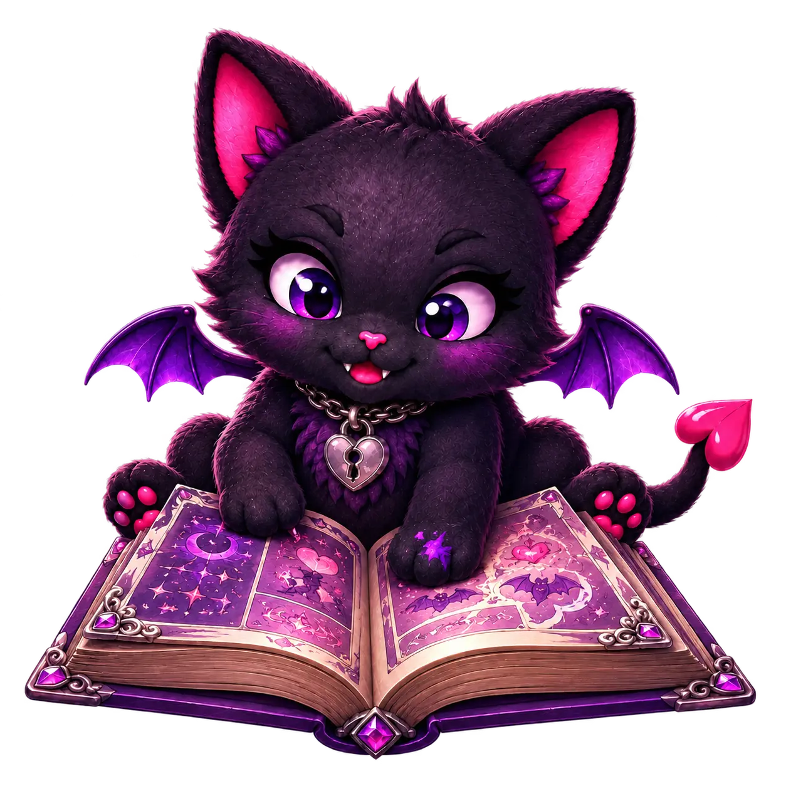

Hobby Hub / Drawn Stories
The Illustrated Shelf.
Manga, manhwa, webcomics, graphic novels, and Western comics whose panels moved into my brain without submitting paperwork.

The illustrated catalogue
Choose your preferred panels.
Browse by format, status, genre, mood, art style, relationship structure, intensity, availability, or creative influence once entries exist.
MangaManhwaWebcomicsGraphic NovelsWestern ComicsReading NowFive-Cat Favorite
Compact until opened
The shelf is awaiting evidence.
Cards reveal only the title, creator, format, status, rating, and seals at first. The full artistic damage report stays folded beneath.
First illustrated storyA panel will eventually bite meOpen future card
An official source, spoiler-light verdict, artwork notes, reading status, content warnings, creative fuel, and rating will live here.
Future favoriteThe jeweled bookmark is unclaimedOpen future card
Official creator and publisher links come first. Reposted chapters and uncredited art do not enter this shelf.
The demon-cat scaleNot for meInterestingRecommendedBelovedBrain possession